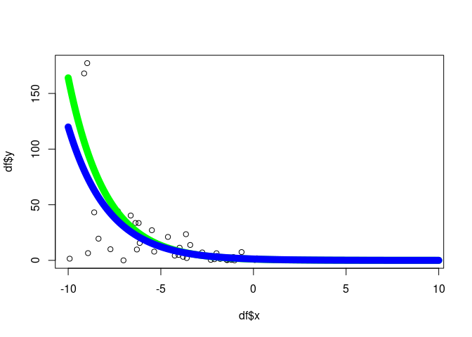

algebraic.mle is an R package that provides an algebra over Maximum Likelihood Estimators (MLEs). These estimators possess many desirable, well-defined statistical properties which the package helps you manipulate and utilize.
Installation
algebraic.mle can be installed from GitHub by using the devtools package in R:
#devtools::install_github("queelius/algebraic.mle")
#devtools::install_github("queelius/algebraic.dist")
library(algebraic.dist)
#> Registered S3 method overwritten by 'algebraic.dist':
#> method from
#> print.dist stats
library(algebraic.mle)Purpose
The likelihood function is a fundamental concept in statistics and parametric models. The algebraic.mle package enables you to manipulate and utilize MLEs in a way that is consistent with the underlying statistical theory and according to a powerful, well-defined interface.
API Overview
The main object in the algebraic.mle package is the mle object, which represents a fitted model. The package provides a number of generic methods designed for mle objects. A comprehensive list of functions is available in the function reference for algebraic.mle.
Fitting exponential models
Here is an example of fitting a conditional exponential model to some data using algebraic.mle. The true DGP is given by Y | x ~ X(x) + W where X(x) ~ EXP(rate(x)), W ~ N(0, 1e-3), and rate(x) = exp(b0 + b1 * x).
In this analysis, we do not care how x is distributed, and we take it to be an observable exogenous variable. We are interested in the conditional distribution of Y | x.
Let’s fit a conditional exponential model to some data from this DGP. While the true DGP is a bit more complicated, the most salient part is the exponential component, and the gaussian term may be thought of as added noise, say, from imprecise measurement. Of course, the true DGP is unknown in practice, so arriving at an conditional exponential model is a matter of judgement and domain knowledge.
In this model, Y | x ~ EXP(rate(x)) where rate(x) = exp(b0 + b1*x). First, let’s define the DGP (data generating process):
b0 <- -.1
b1 <- 0.5
dgp <- function(n, x) {
# rate is the expected value of X
rate <- exp(b0 + b1 * x)
X <- rexp(n, rate)
# W is the random error
W <- rnorm(n, 0, 1e-3)
# Y | x is the observed value
Y <- X + W
return(Y)
}Let’s generate some date:
n <- 75 # number of observations
set.seed(1231) # for reproducibility
df <- data.frame(x = rep(NA, n), y = rep(NA, n))
for (i in 1:n) {
# We do not care how x is distributed, so we take it to be an observable
# exogenous variable that impacts the conditional mean of Y.
x <- runif(1, -10, 10)
y <- dgp(n = 1, x = x)
df[i, ] <- c(x, y)
}Now, we define three functions, resp, rate, and loglik, which will be used to define the model.
resp <- function(df) df$y
rate <- function(df, beta) exp(beta[1] + beta[2] * df$x)
loglik <- function(df, resp, rate) {
function(beta) sum(dexp(x = resp(df), rate = rate(df, beta), log = TRUE))
}Let’s fit the model. We’ll use the optim function in stats to fit the model and then wrap it into an mle object using mle_numerical.
# initial guess for the parameters
par0 <- c(0, 0)
names(par0) <- c("b0", "b1")
sol <- algebraic.mle::mle_numerical(optim(par = par0,
fn = loglik(df, resp, rate),
control = list(fnscale = -1),
hessian = TRUE))
summary(sol)
#> Maximum likelihood estimator of type mle_numerical is normally distributed.
#> The estimates of the parameters are given by:
#> b0 b1
#> -0.2253626 0.4560893
#> The standard error is 0.1167634 0.02145606 .
#> The asymptotic 95% confidence interval of the parameters are given by:
#> 2.5% 97.5%
#> b0 -0.4542147 0.003489406
#> b1 0.4140362 0.498142415
#> The MSE of the individual components in a multivariate estimator is:
#> [,1] [,2]
#> [1,] 0.0136336902 0.0003746527
#> [2,] 0.0003746527 0.0004603623
#> The log-likelihood is -119.6977 .
#> The AIC is 243.3954 .Let’s plot it:
# plot the x-y points from the data frame
plot(df$x,df$y)
# now overlay a plot of the conditional mean
x <- seq(-10, 10, .1)
b0.hat <- params(sol)[1]
b1.hat <- params(sol)[2]
y.hat <- 1/exp(b0.hat + b1.hat*x)
y <- 1/exp(b0 + b1*x)
lines(x, y, col = "green", lwd = 10)
lines(x, y.hat, col = "blue", lwd = 10)
Hypothesis test and model selection
Let’s test the hypothesis that b0 = 0 using a likelihood ratio test. We can use the LRT because this null model is a special case (nested) of the full model. The null model is Y | x ~ EXP(rate(x)) where rate(x) = exp(b1*x), while the full model is Y | x ~ EXP(rate(x)) where rate(x) = exp(b0 + b1*x).
# construct null model where b1 = 0
rate_b0_zero <- function(df, b1) exp(b1 * df$x)
# initial guess for the parameters
# fit the model under the null hypothesis
sol2 <- mle_numerical(optim(par = 0,
fn = loglik(df, resp, rate_b0_zero),
control = list(fnscale = -1),
hessian = TRUE,
method = "BFGS"))
summary(sol2)
#> Maximum likelihood estimator of type mle_numerical is normally distributed.
#> The estimates of the parameters are given by:
#> [1] 0.4617093
#> The standard error is 0.01899941 .
#> The asymptotic 95% confidence interval of the parameters are given by:
#> 2.5% 97.5%
#> param1 0.4244712 0.4989475
#> The MSE of the estimator is 0.0003609774 .
#> The log-likelihood is -121.7164 .
#> The AIC is 245.4328 .Let’s compute the likelihood ratio test statistic and p-value:
(lrt.sol2 <- -2 * (loglik_val(sol2) - loglik_val(sol)))
#> [1] 4.037435
pchisq(lrt.sol2, df = 1, lower.tail = FALSE) # compute the p-value
#> [1] 0.04450142We see that the p < 0.05, but just barely, so we say the data is not compatible with the null hypothesis b0 = 0.
If we wanted to do model selection, we could use the AIC:
By the AIC measure, since the full model has an AIC less than the null model, we would choose the full model. We actually know the DGP and both models are reasonable approximations, but the full model is a closer approximation.
“All models are wrong, but some are useful.” - George Box
Eventually, if we have a sufficiently large sample, any model that is not the DGP can be discarded, but reality is so complex that we will never have a large enough sample and we will never be able to come up with a model that is exactly the DGP.
Let’s do another test, b1 = 0, i.e., it’s an unconditional exponential model, or just a standard exponential distribution.
rate_b1_zero <- function(df, b0) exp(b0)
# fit the model under the null hypothesis
sol3 <- algebraic.mle::mle_numerical(optim(par = 0,
fn = loglik(df, resp, rate_b1_zero),
control = list(fnscale = -1),
hessian = TRUE,
method = "BFGS"))
(lrt.sol3 <- -2 * (loglik_val(sol3) - loglik_val(sol)))
#> [1] 285.0265
pchisq(lrt.sol3, df = 1, lower.tail = FALSE) # compute the p-value
#> [1] 6.029289e-64This has a p-value of essentially zero, so we reject the null hypothesis that b1 = 0.
Let’s compare the confidence intervals for each of these models.
print(confint(sol))
#> 2.5% 97.5%
#> b0 -0.4542147 0.003489406
#> b1 0.4140362 0.498142415
print(confint(sol2))
#> 2.5% 97.5%
#> param1 0.4244712 0.4989475
print(confint(sol3))
#> 2.5% 97.5%
#> param1 -2.722463 -2.269829We see that the 95% confidence interval for b0 does not include zero, so we reject the null hypothesis that b0 = 0. The 95% confidence interval for b1 does not include zero, so we reject the null hypothesis that b1 = 0.
You can see tutorials for more examples of using the package in the vignettes.